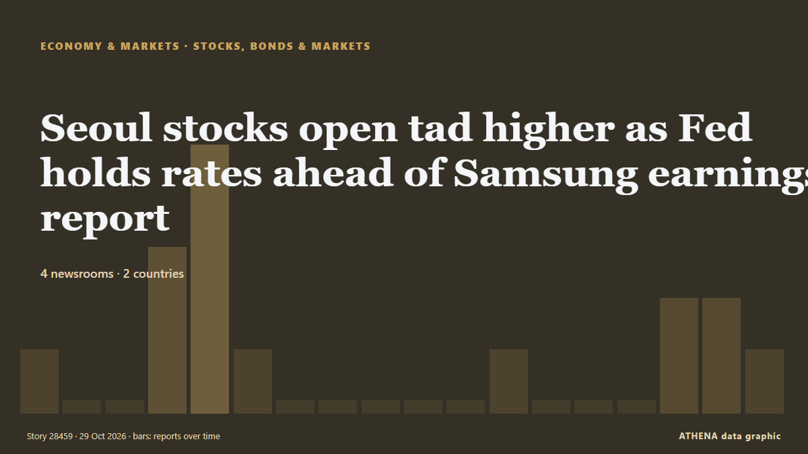

Seoul stocks open tad higher as Fed holds rates ahead of Samsung earnings report

Korean stocks opened slightly higher Thursday, buoyed by the Federal Reserve's decision to hold interest rates steady and expectations for strong third-quarter earnings from Samsung Electronics amid… from The Korea Times
Reported independently by 4 outlets in 2 countries since 25 Oct, first by Yonhap (English); coverage is fading. ATHENA rates the risk low (1.8/10), driven mainly by the severity of the harm described and its geographic and sector reach. Confidence is 64% (moderate), with 4 independent outlets corroborating it and an average source reliability of 73%. Who reported it: 15 newsrooms in South Korea, 1 newsrooms in Pakistan. The coverage ran from 25 Oct to 29 Oct, over 103 hours.
Why it matters: Central banks set the price of money; their rate decisions and signals move currencies, bonds, mortgages and stock markets worldwide.
What changed: 5 new reports from 4 newsrooms in the 24 hours to 29 Oct.
First reported as: Seoul shares dip over 1% ahead of earnings reports, Fed decision
At a glance
Selected, scored and written by ATHENA's published methodology. No editor intervenes in individual events. How this is produced ›
| 25 Oct 01:09 UTC | 1 |
|---|---|
| 25 Oct 07:09 UTC | 0 |
| 25 Oct 13:09 UTC | 0 |
| 25 Oct 19:09 UTC | 3 |
| 26 Oct 01:09 UTC | 5 |
| 26 Oct 07:09 UTC | 1 |
| 26 Oct 13:09 UTC | 0 |
| 26 Oct 19:09 UTC | 0 |
| 27 Oct 01:09 UTC | 0 |
| 27 Oct 07:09 UTC | 0 |
| 27 Oct 13:09 UTC | 0 |
| 27 Oct 19:09 UTC | 1 |
| 28 Oct 01:09 UTC | 0 |
| 28 Oct 07:09 UTC | 0 |
| 28 Oct 13:09 UTC | 0 |
| 28 Oct 19:09 UTC | 2 |
| 29 Oct 01:09 UTC | 2 |
| 29 Oct 07:09 UTC | 1 |
| 25 Oct 01:13 UTC | 0.0 |
|---|---|
| 26 Oct 00:27 UTC | 1.1 |
| 26 Oct 03:00 UTC | 2.5 |
| 29 Oct 08:08 UTC | 1.8 |
Why these numbers
Importance
Risk
Confidence
The reporting — who reported it, and when
headline as published · opens the original- Yonhap (English) · South KoreaSamsung Electronics, SK hynix set to report Q3 earnings this week
- The Korea Times · South KoreaSamsung, SK hynix shareholder return policies in focus ahead of Q3 earnings
- Korea Herald · South KoreaSK hynix weighs $12.1 billion special dividend, newspaper says
- The Korea Times · South KoreaSeoul stocks open lower ahead of earnings reports, Fed decision
- The Korea Times · South KoreaSeoul stocks extend losses Monday morning ahead of earnings reports, Fed decision
- Yonhap (English) · South Korea(URGENT) Seoul shares dip over 1 pct ahead of earnings reports, Fed decision
- Yonhap (English) · South KoreaSeoul shares dip over 1 pct ahead of earnings reports, Fed decision
- Yonhap (English) · South Korea(LEAD) Seoul shares dip over 1 pct ahead of earnings reports, Fed decision
- Korea Herald · South KoreaSeoul shares dip over 1% ahead of earnings reports, Fed decision
- Yonhap (English) · South Korea(2nd LEAD) Seoul shares dip over 1 pct ahead of earnings reports, Fed decision
- The Korea Times · South KoreaSeoul stocks open sharply higher on revived AI optimism, SK hynix earnings
- Yonhap (English) · South Korea(URGENT) Seoul stocks open tad higher as Fed freezes rates ahead of Samsung earnings
- The Korea Times · South KoreaSeoul stocks open tad higher as Fed holds rates ahead of Samsung earnings report
- The Korea Times · South KoreaSeoul stocks down 3% late Thursday morning after weaker-than-expected Samsung earnings
- Business Recorder · PakistanSouth Korean shares fall sharply after Samsung Electronics earnings
- Korea Herald · South KoreaSeoul shares down 1.24% as Samsung disappoints on shareholder returns